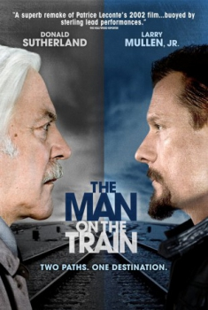

Passagem para a Vida (2011)


Passagem Vida

Avaliação (TMDb):


5.6/10 (7 votos)
Avaliação (Usuário):
Outro Título:Man on the Train
País:Canada, 101 minutos
Idiomas falados:Inglês, Português
Gênero(s):Drama
Diretor(s):Mary McGuckian
Codec:MPEG-2 (DVD)
Número: 4498
Sinopse:
Um criminoso misterioso chega em uma pequena cidade planejando roubar o banco local, presumindo que tudo correrá bem. Mas quando ele encontra um professor aposentado de poesia, seus planos tomam uma rumo improvável.
Elenco:
Donald Sutherland, Larry Mullen Jr., Paula Boudreau, Gary Hetzler (voz), Kate O'Toole
Tipo de mídia: DVD5,
Legendas: Português,
Alugado: Não
Tela: 2.35:1